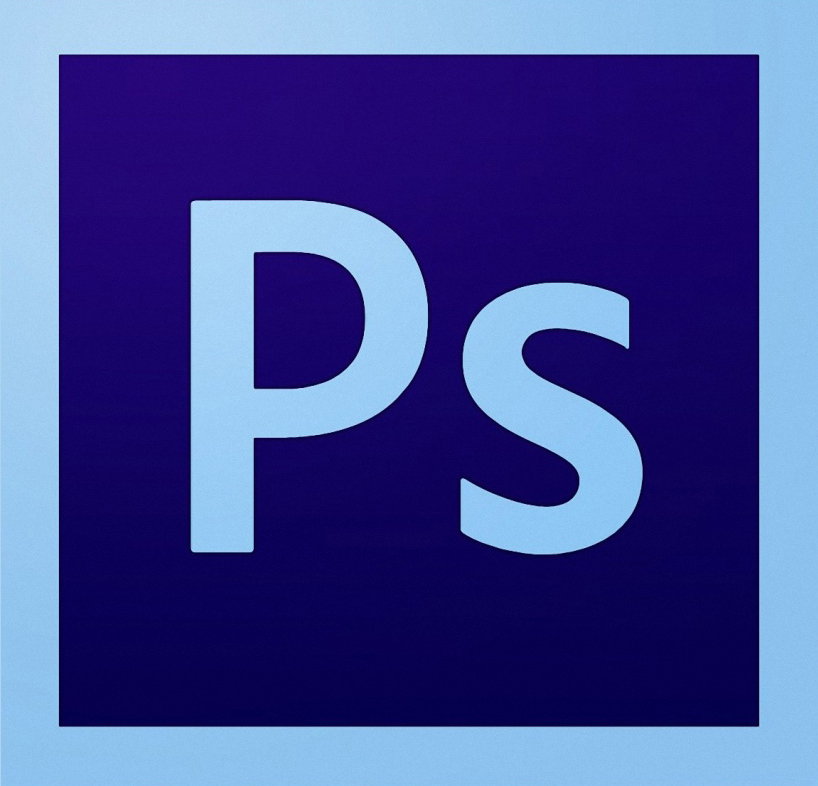
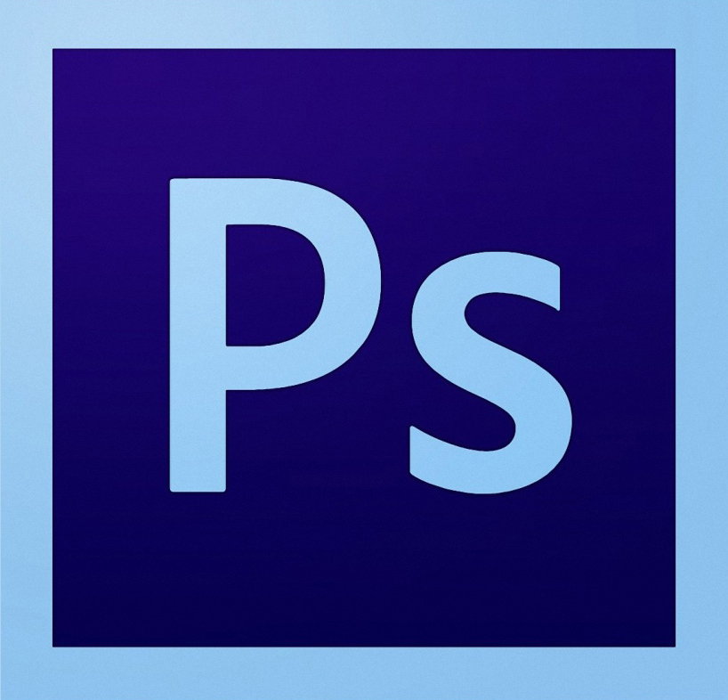

ho svolto il mio primo stage scolastico nella azienda mediaticamente semi gestita dal professore acquati.
nella stessa aziena bimestralmente esce una rivista chiamata funny vegan, rivista che parla del mondo vegano.
nella stessa aziena bimestralmente esce una rivista chiamata funny vegan, rivista che parla del mondo vegano.
una delle tante cosa imparate e lavorare in photoschop un programmapa realiziato per modificare foto e realizare fotomontaggi ad alta definizione. e stata una delle cose che speravo di imparare sono molto soddisfatto


in questo stage o anche compilato le destinazione di pacchi per funny vegan e stata la cosa piu noiosa che o fatto in questo stage anche se o imparato a una cosa che potrebbe servirmi in futuro
in questo stage per ever una conoscenza completa del mondo informatico mi e mancata la parte hardware che non ho prqaticato in questo mese